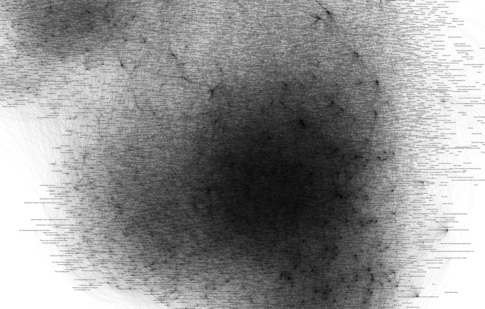

AR et Photogrammétrie pour Explorer le Passé et le Futur de locaux vacants de Montréal
Un projet engagé?
La présence de locaux vacant, qu’ils soient commerciales ou résidentiels, sont à la fois représentatif des causes et des résultats de la crise sociale du logements qui est de plus en plus présente à Montréal.
Ces locaux se mêlent aux paysages des cartiers et finissent par devenir invisible au yeux de ceux qui l’habite ou y commute régulièrement.
Les projets de restauration, de modernisation ou de reconstruction qui ont marqué la paysage immobilier montréalais dans les années 701 semblent avoir disparu derrière un rideau bureaucratique complexe qui n’accepte que très rarement de nouveau projets d’habitation sociale.2
Locaux Fantôme cherche à faire un lien entre le passé actif de certains locaux vacants de Montréal, leur situation présente, laissé à l’abandon, ainsi que leur futur incertain. Cette exploration urbaine se concentre sur les lieux abandonnés, les vestiges et le patrimoine urbain, révélant ainsi une histoire cachée. Grâce à le reconstruction numérique à partir de photographie d’archives et des techniques de photogrammétrie moderne pour digitalisé les espaces actuels, Locaux Fantôme cherche à brouiller la ligne temporel de ces lieu au sein d’une expérience en réalité augmenté accessible sur téléphone intelligent qui sera généré à partir d’une installation utilisant des archives imprimées.
Photogrammétrie, Modélisation 3D, Réalité augmentée (AR), Exploration urbaine, Locaux abandonnés, Décrépitude, Patrimoine urbain, Mémoire, Reconstruction, Interactivité, Exploration virtuelle, Déclin urbain, Transformation spatiale, Récit visuel.
Figure 1: Nans Bortuzzo, Tissu Sociale
« Parfois, ce ne sont pas les joueurs qui sont mauvais, mais les règles du jeu. »
- L’artiste Nans Bortuzzo, au sujet de l’absence de certaines règlementations qui existent dans d’autres villes (Émilie Côté, La presse, 25 oct. 2023)
Image Content
Video Content
Document Content
Références:
1 Canada, Office national du film du, réal. s. d. Montréal - Retour aux quartiers. Consulté le 6 février 2024. https://www.onf.ca/film/montreal-retour-aux-quartiers/embed/player/.
2 Goudreault, Stéphanie Vallet, Zacharie. 2021. « Dans le désert du logement social ». Le Devoir. 13 octobre 2021 https://www.ledevoir.com/societe/639931/montreal-dans-le-desert-du-logement-social.